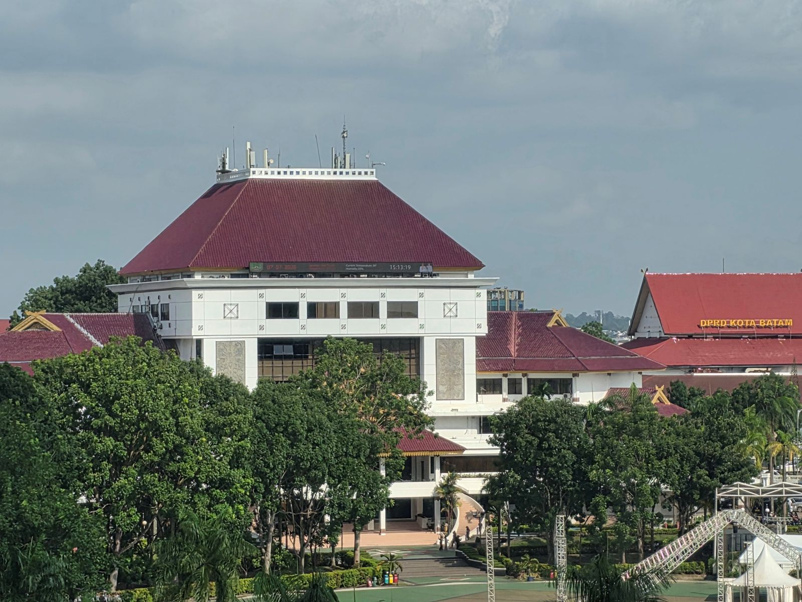
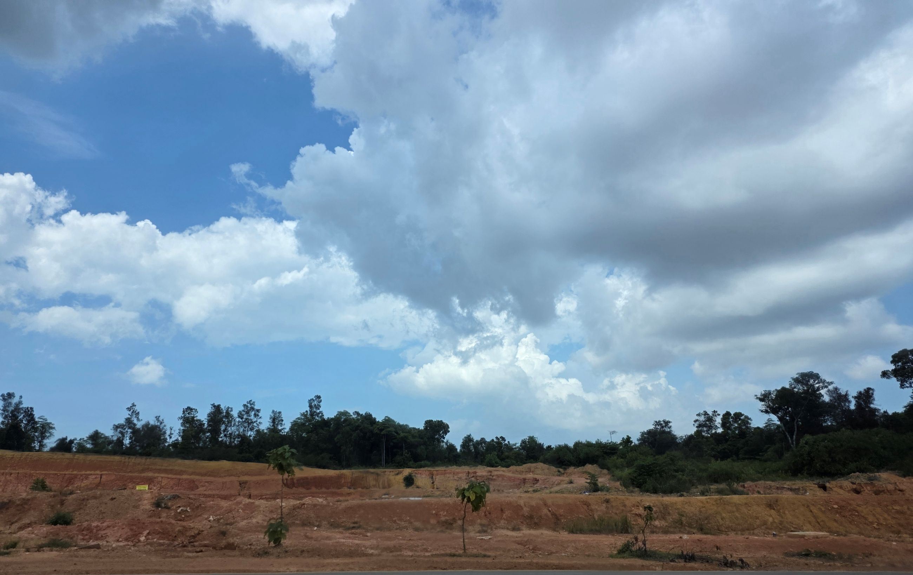
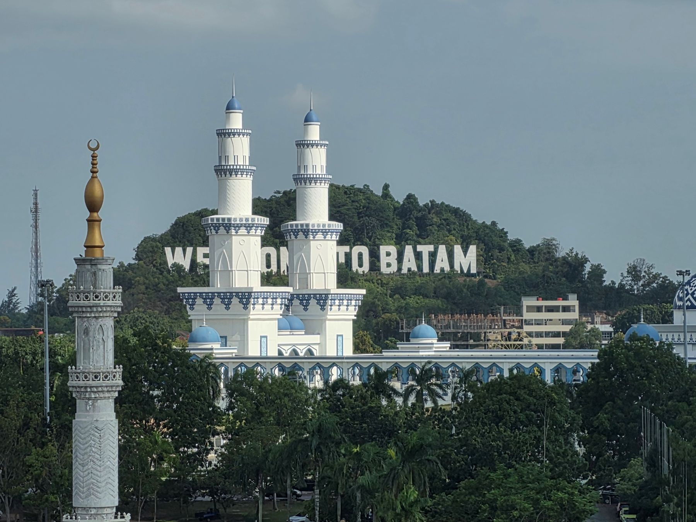
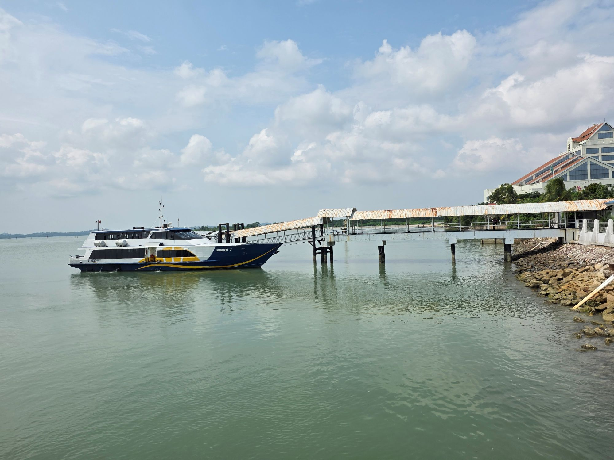
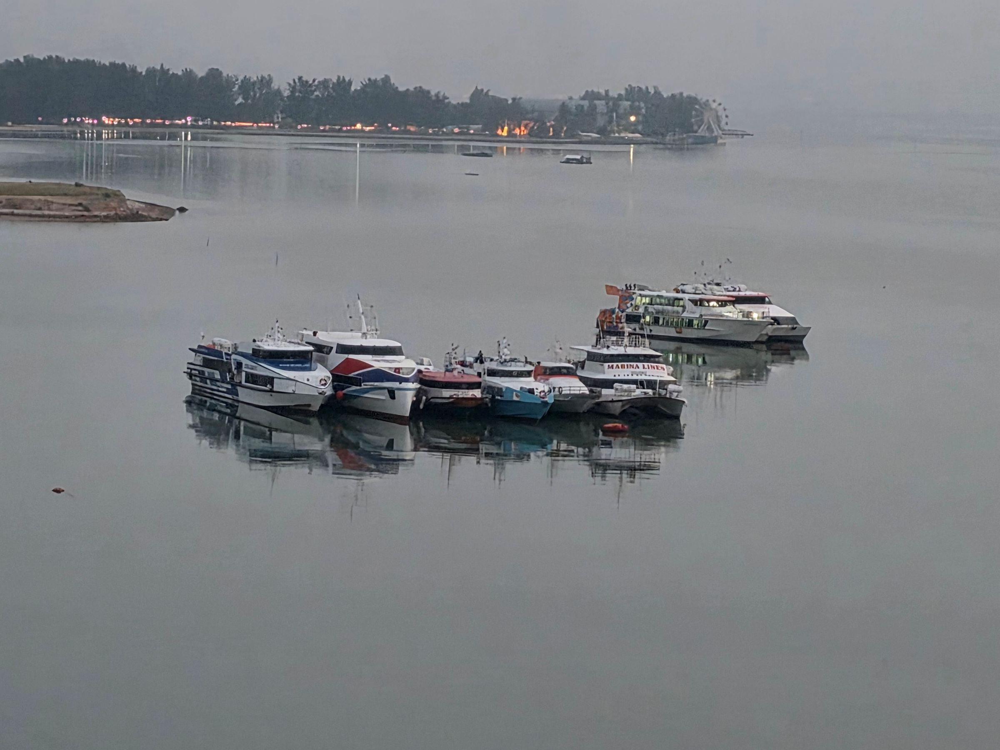
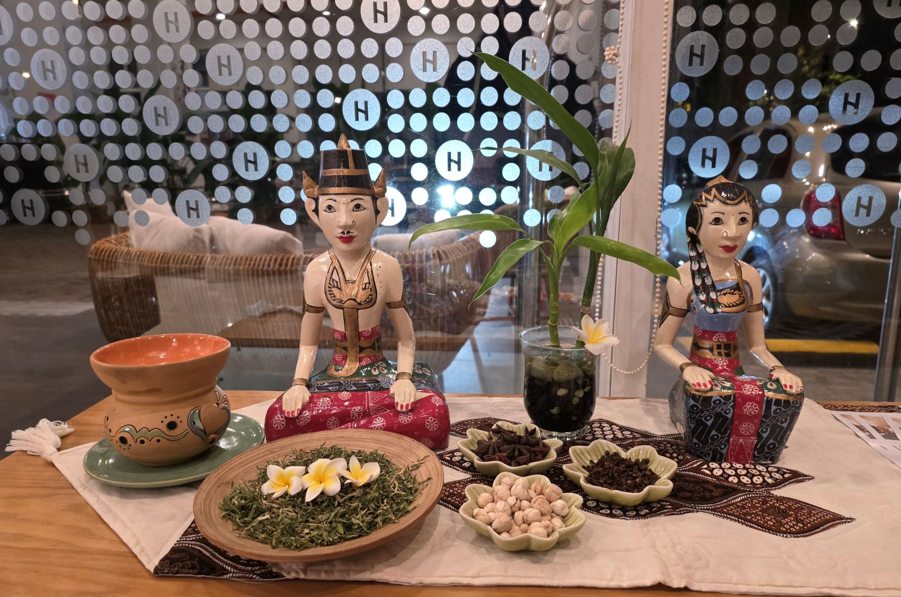
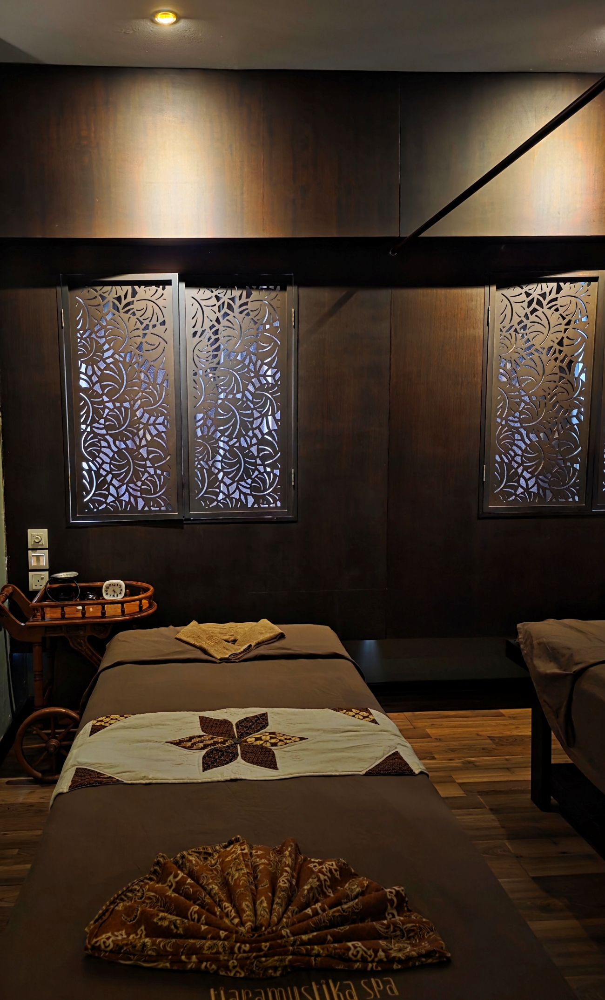
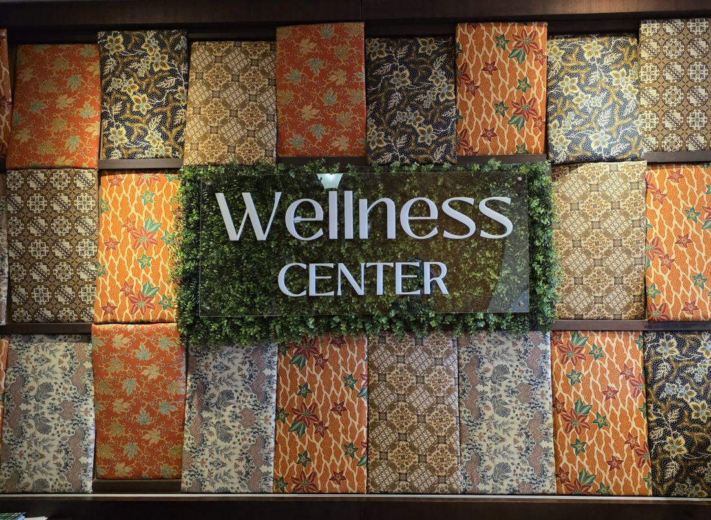
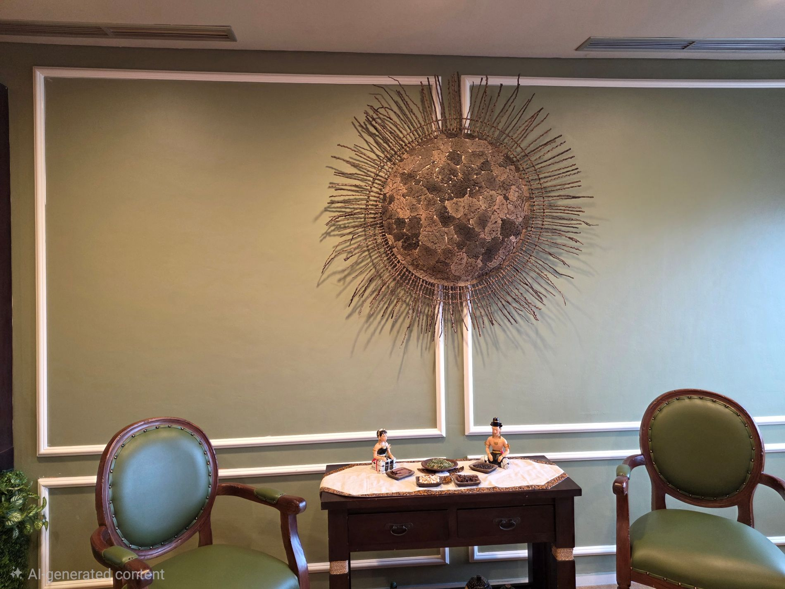

내게 주는 휴식 여행
Website 제작을 하고 배포 및 도메인 연결을 완료한 후, 두 달간의 긴장감과 피로를 풀기 위해 휴식 여행을 떠났다.
누가 보면 시켜서 한일인 줄😂
원래는 친구와 태국 여행을 계획했으나 친구 회사 업무로 인해 취소되어 일정을 변경했다.
아주 오래전에 Singapore에서 Bintan 섬을 다녀온 적이 있었는데 그 당시 초딩이었던 아들도 좋아할 만큼 마사지가 훌륭했었다.
그래서 휴식 여행을 테마로 하여 Batam -Singapore -Johor Bahru -KL 일정을 확정했다.
KL에서 비행 시간이 한 시간이 채 걸리지 않는데다 국내 구간보다 저렴한 직항이 있어 기대감에 부풀어 Batam 공항에 도착했는데.. 이게 뭔 일? 한국인은 비자 비용을 내라 한다. 무려 170링깃이나.
거기에 온라인 입국신고를 해야 하는데 검색하니 가장 먼저 뜨는 사이트가 사기 사이트였다.
Immigration 직원에게 "왜 너희 나라는 입국신고서 신청하는데 돈을 받지?"라고 물어보지 않았더라면 USD90을 뜯길뻔했다.
무서븐 세상.
다음 일정이 ferry를 타고 Singapore에 가는 것이었기에 다른 일정은 생각하지도 않았고 딱히 볼 것도 없었다.
호텔에 도착해서 유일하게 한 일은 Massage 받기.
역시 기대를 저버리지 않았다.
그동안 쌓였던 피로가 풀리는 느낌이었다.
말레이시아에서는 단 한 번도 만족할만한 Massage를 받아본 적이 없었는데 역시 기대를 저버리지 않았다.
웰컴 초콜릿에 오가닉 주스까지 제공하는 호텔에 매우 흡족했으나 가격은 현지 물가 대비 비싼 편이었다.
호텔에서 저녁식사와 아침 식사를 해결하며 그저 나의 수면제인 CNN & BBC 뉴스를 들으며 잠을 자는 것만으로도 충분히 만족스러웠다.
같은 이슬람 문화권인데도 인도네시아는 조금 다른 문화가 있다.
친절하고 웃는 얼굴로 맞이해 주는 것에 편한함을 느꼈다.
전체적으로 만족스러운 여행이었으나 배보다 배꼽이 큰 여행 경비로 계속 삥 뜯기는 기분이 들었다.
그래도 정말 오랜만에 피로를 풀었으니 그 값을 치렀다고 생각하고 기분 좋게 싱가폴로 향했다.